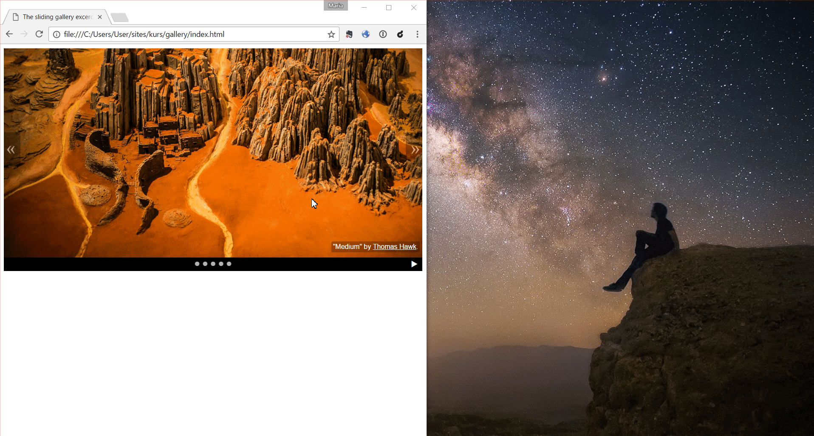
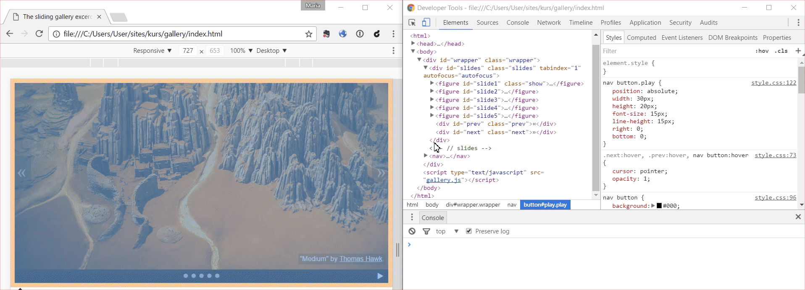

Cześć!
Dzisiaj nauczymy się, jak za pomocą języka JavaScript stworzyć interaktywną galerię obrazków.

Struktura i wygląd galerii (HTML i CSS) są już gotowe.
(Kliknij tutaj, żeby zobaczyć)
Naszym zadaniem będzie ożywić ją dodając kod JavaScript.
Na efekt końcowy składa się kilka niezależnych etapów, więc nie martw się, jeżeli nie zdążymy zrobić wszystkiego.
Swoją drogą, przyjemne te slajdy, prawda? :-) Wszystkie animacje i przejścia między nimi są zakodowane właśnie w JavaScript.
Zadania będziemy robić w trzyosobowych grupach, dlatego ważne jest, żebyśmy dyskutowały razem nad pomysłami i pomagały sobie nawzajem.
Nasz(a) instruktor(ka) będzie cały czas nad nami czuwać i chętnie odpowie na wszystkie pytania.
Gotowe? Na zielono pojawią się pytania, które warto omówić w grupach przed wyruszeniem dalej.
Środowisko pracy
- edytor tekstu - do pisania naszego kodu. Jeżeli nie masz ulubionego, możesz zainstalować Brackets (też działa w oparciu o JavaScript!)
- przeglądarka internetowa - na pewno masz swoją ulubioną. Jeżeli jest to Internet Explorer, to... czas zmienić swoją ulubioną przeglądarkę, bo bywa mocno nieprzewidywalna ;-) Na przykład na Chrome.
- narzędzia programisty - już je masz! Naciśnij F12 (Ctrl + Option + J na Macbookach) żeby się przekonać.
Ściągawka
https://developer.mozilla.org/
Ściągawki są jak najbardziej wskazane, nikt nie zna tego wszystkiego na pamięć!
Pamiętacie demo naszej galerii?
Składają się na nią trzy warstwy:
Struktura dokumentu
Jakie elementy są widoczne na stronie?
Obrazki, tekst, akapity, nagłówki, ikonki, itp. - za to wszystko odpowiedzialny jest HTML.
Prezentacja
Jak wyglądają poszczególne elementy?
Rozmiar, kształt, kolor, rodzaj czcionki, pozycja względem innych elementów - na te pytania odpowiada CSS.
Interakcja z użytkownikiem
Co się dzieje na stronie?
Jakie możliwości ma użytkownik? Co się wtedy stanie? - Do tego potrzebny nam JavaScript - i tym też się za chwilę zajmiemy.
Zastanówmy się
Z jakich elementów składa się nasza galeria? Skąd możemy wiedzieć jak są zbudowane?
Narzędzia programisty!
Prawie każda przeglądarka internetowa ma w sobie genialne narzędzia, które pomogą nam zrozumieć z czego składa się strona i w jaki sposób ona działa.
Opcja Zbadaj pozwala nam podejrzeć szczegóły.
Podświetlenie wybranego elementu
Klasy, style, i możliwość ich zmiany

Konsola JavaScript

Czas na eksperymenty! Korzystając z tych narzędzi, spróbujmy zabrać klasę show z elementu który ma ją obecnie, i dodać ją do innego obrazka.
Udało się? Klasa show dopisuje dodatkowe style CSS, dzięki czemu element, który ma tę klasę, pokazuje się na wierzchu pozostałych.
Jeżeli zastanawiasz się, jak to jest zrobione, nasz(a) instruktor(ka) chętnie to wytłumaczy dokładniej.
Naszym zadaniem będzie znalezienie sposobu, żeby przełączać tę klasę przy użyciu kodu, i dzięki temu automatycznie zmieniać slajdy.
Skąd komputer wie, co ma robić?
Była taka zabawa na samym początku zajęć...
Zapiszmy po polsku instrukcje potrzebne do pokazania slajdu nr 5.
Pewnie wygląda to mniej więcej tak:
1. Znajdź slajd nr 5 w dokumencie.
2. Dodaj do niego klasę show.Do szukania elementów w dokumencie przyda nam się obiekt document.
Otwórz narzędzia programisty, wpisz w konsoli słowo document i sprawdź, co się stanie.
Mamy tutaj obiekt, który zawiera całą strukturę pliku HTML. Dzięki niemu możemy znaleźć dowolny element dokumentu i zmienić go przy pomocy kodu.
Dla ciekawych jak to działa - lektura na potem: What is the DOM? - on CSS Tricks
Obiekt document ma wiele metod do operowania na elementach strony. W tym momencie poznamy jedną z nich:
querySelector( warunek )- wybiera wszystkie elementy, które spełniają dany warunek.
Jeżeli znasz CSS, to świetnie. Selektory w tym przypadku działają dokładnie tak samo, na przykład:
// wybiera wszystkie nagłówki 3 stopnia
document.querySelector( 'h3' )
// wybiera wszystkie artykuły
document.querySelector( 'article' )
// wybiera wszystkie elementy z klasą moja-klasa
document.querySelector( '.moja-klasa' )
// wybiera element z ID artykul-1
document.querySelector( '#artykul-1' ) Jeżeli nie znasz CSS, nic straconego. W narzędziach programisty pod prawym przyciskiem myszy znajdziesz opcję Kopiuj > Kopiuj selektor.
Otwórzmy konsolę i na podstawie przykładów z poprzedniego slajdu napiszmy kod, który znajdzie nam slajd nr 5.
document.querySelector( '#slide5' )To, co dostałyśmy z powrotem to element drzewa dokumentu. Chcemy teraz znaleźć metody, które pozwolą na dodanie lub zabranie mu klasy CSS.
W tym celu pomogą nam:
classList.add( nazwa-klasy )- dodaje klasę o podanej nazwie,classList.remove( nazwa-klasy )- zabiera daną klasę z elementu.
Złóżmy w konsoli kod potrzebny do pokazania slajdu 5 - szukamy go przy użyciu querySelector, a potem wołamy na nim metodę classList.add z nazwą klasy. Uwaga na duże i małe litery! Polecenie kończymy średnikiem.
Gotowe?
document.querySelector( '#slide5' ).classList.add( 'show' );Działa? Teraz zróbmy to samo dla slajdu 4.
document.querySelector( '#slide4' ).classList.add( 'show' );Kod dla slajdu 4 nie zadziałał, chociaż jest zbudowany praktycznie tak samo jak poprzedni. Jakieś pomysły dlaczego tak się stało?
Musimy schować slajd 5, który przykrywa nam pozostałe.
Napiszmy w konsoli kod, który to zrobi.
document.querySelector( '#slide5' ).classList.remove( 'show' );Super! Skopiujmy wszystkie trzy fragmenty do naszego pliku galeria.js. Przydadzą nam się niedługo przy programowaniu nawigacji.
Zacznijmy od menu
Na dole mamy 5 białych guziczków. Oprogramujemy każdy z nich tak, żeby pokazywał odpowiedni slajd.
Zastanówmy się i zapiszmy po polsku, jak będzie wyglądał przepis na pokazanie slajdu 5 gdy ktoś kliknie myszą guzik o tym numerze.
Gotowe?
Wyszło nam pewnie coś takiego:
1. Znajdź piąty guziczek.
2. Sprawdzaj, kiedy zostanie kliknięty.
3. Kiedy jest kliknięty wykonaj akcję:
3.1. Schowaj aktualnie widoczny slajd.
3.2. Pokaż slajd piąty.Tym razem zaczniemy od końca. Ostatnie dwie instrukcje powinny wykonywać się razem, więc porzebujemy znaleźć jakiś sposób, żeby je ze sobą powiązać.
Do tego potrzebne nam będą funkcje.
Funkcja to ciąg kilku poleceń które tworzą logiczną całość, i powinny wykonywać się razem jedno po drugim.
W JavaScript możemy budować funkcje na kilka różnych sposobów, z czego najprostszy to:
function nazwafunkcji ( ) {
/* treść funkcji */
}W pliku galeria.js stwórz funkcję o nazwie showSlide5. W jej treści dodaj kod, który pokazuje piąty slajd (tak, jak zrobiłyśmy to na poprzednim etapie).
function showSlide5 ( ) {
document.querySelector('#slide5').classList.add('show');
}Mamy naszą pierwszą funkcję! Teraz chcemy powiązać ją z guziczkiem nr 5, tak żeby wykonywała się za każdym razem, kiedy ktoś go kliknie.
Pamiętacie, jak udało nam się znaleźć konkretny slajd na poprzednim etapie? Jak możemy zrobić teraz to samo z guziczkiem?
document.querySelector( '#pin5' )Teraz potrzebujemy jakiejś metody, która pozwoli nam powiązać naszą funkcję z kliknięciem w ten element.
Dzięki ściągawce wiemy, że jest to:
addEventListener( wydarzenie, akcja-do-wykonania )- wykonuje podaną akcję, gdy z elementem stanie się coś konkretnego.
Wydarzeniem może być wszystko, co dzieje się na stronie: to, co robi z nią użytkownik (kliknięcie, przesunięcie myszy nad elementem, wciśnięcie klawisza, zmaksymalizowanie okna, scroll, itp), a także rzeczy, które dzieją się automatycznie, np. załadowanie strony.
W tym przypadku potrzebny nam będzie typ 'click', który odpowiada za kliknięcie w dany element.
W pliku galeria.js masz już kod wyszukujący guziczek nr 5. Przy użyciu metody addEventListener powiąż kliknięcie na tym guziczku (wydarzenie 'click') z funkcją showSlide5 napisaną wcześniej.
document.querySelector('#pin5').addEventListener( 'click', showSlide5 );Co teraz? Odświeżamy stronę i patrzymy, czy działa ;-)
Mamy już kod, który pokazuje slajd 5. Teraz zanim go pokażemy, przydałoby się znaleźć aktualny slajd i go schować.
Jak możemy znaleźć aktualny slajd? Czy jest coś, co wyróżnia go od pozostałych?
Aktualny slajd, w odróżnieniu od pozostałych, ma dodaną klasę show. Dodając kropkę przed nazwą klasy dostaniemy selektor, który pozwala po niej wyszukiwać. Korzystając z tej wiedzy i poprzednich przykładów, dodaj na początku funkcji showSlide5 kod, który znajdzie aktualny slajd i go schowa.
Po schowaniu aktualnego slajdu całość przedstawi nam się następująco:
function showSlide5( ) {
document.querySelector( '.show' ).classList.remove( 'show' );
document.querySelector( '#slide5' ).classList.add( 'show' );
}
document.querySelector( '#pin5' ).addEventListener( 'click', showSlide5 );Działa? Teraz możemy na tej podstawie stworzyć kod dla pozostałych slajdów i przycisków. Najprostszym sposobem będzie metoda kopiuj-wklej-zmień co trzeba.
Czas na testy!
Co potrzebujemy sprawdzić, żeby mieć pewność, że wszystko jest OK?
Czas na testy!
Co potrzebujemy sprawdzić, żeby mieć pewność, że wszystko jest OK?